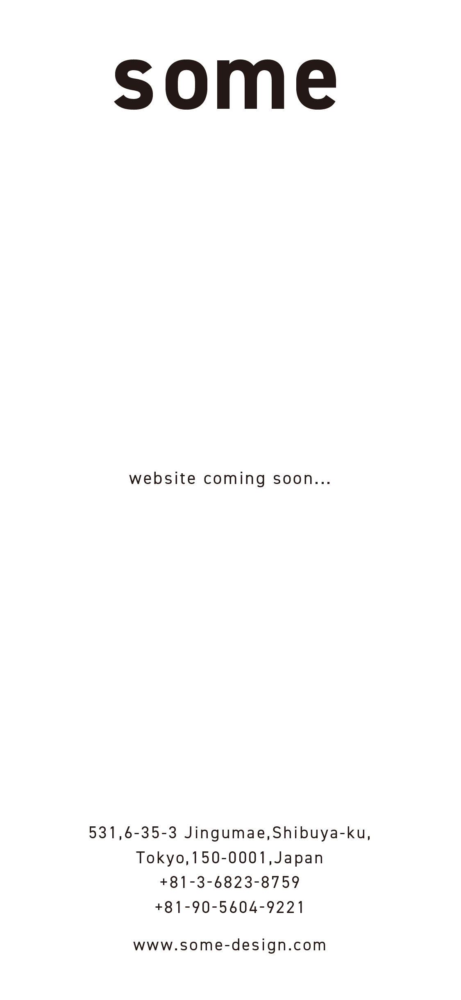
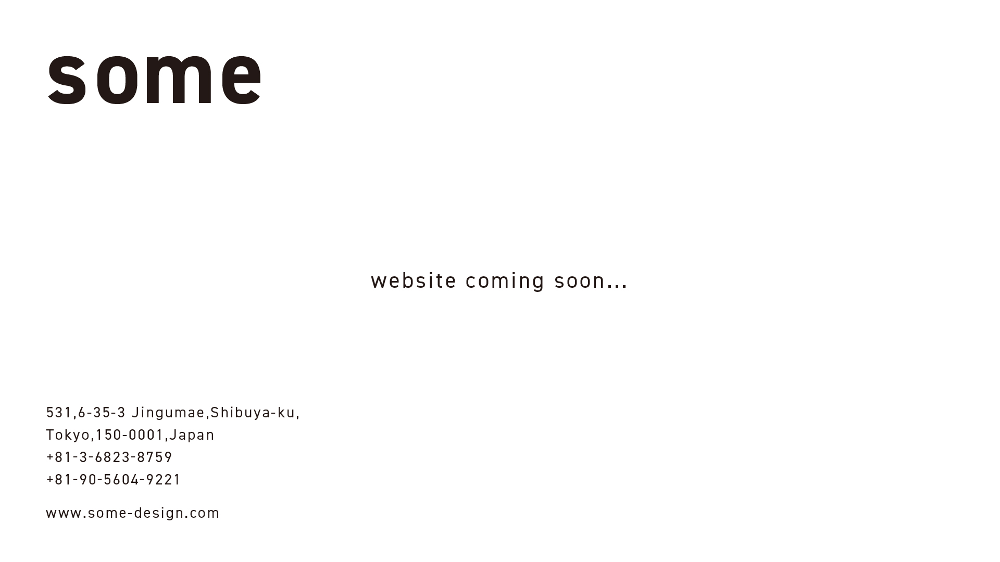

{\rtf1\ansi\ansicpg932\cocoartf2822
\cocoatextscaling0\cocoaplatform0{\fonttbl\f0\froman\fcharset0 Times-Roman;}
{\colortbl;\red255\green255\blue255;\red0\green0\blue0;}
{\*\expandedcolortbl;;\cssrgb\c0\c0\c0;}
\paperw16840\paperh23820\margl1440\margr1440\vieww11520\viewh8400\viewkind0
\deftab720
\pard\pardeftab720\partightenfactor0

\f0\fs24 \cf0 \expnd0\expndtw0\kerning0
\outl0\strokewidth0 \strokec2 <!DOCTYPE html> <html lang="ja"> <head> <meta charset="UTF-8"> <meta name="viewport" content="width=device-width, initial-scale=1.0"> <title>some-design | Better for some</title> <style> body, html \{ margin: 0; padding: 0; height: 100%; width: 100%; overflow: hidden; background-color: #ffffff; /* \uc0\u30011 \u20687 \u12398 \u32972 \u26223 \u33394 \u12395 \u21512 \u12431 \u12379 \u12390 \u22793 \u26356 \u12375 \u12390 \u12367 \u12384 \u12373 \u12356  */ \} .container \{ display: flex; justify-content: center; align-items: center; height: 100vh; width: 100vw; \} .coming-soon-img \{ max-width: 100%; max-height: 100%; object-fit: contain; \} .pc-only \{ display: none; \} .sp-only \{ display: block; \} @media (min-width: 768px) \{ .pc-only \{ display: block; \} .sp-only \{ display: none; \} \} </style> </head> <body> <div class="container">   </div> </body> </html>}